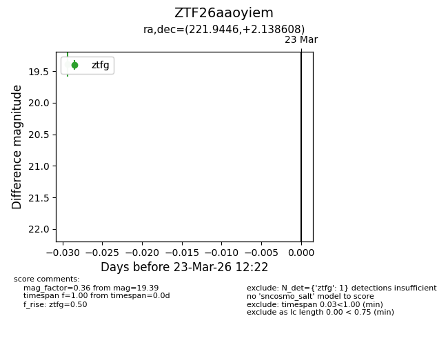
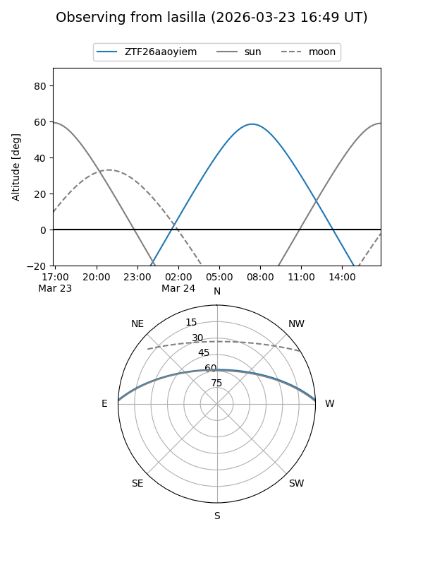
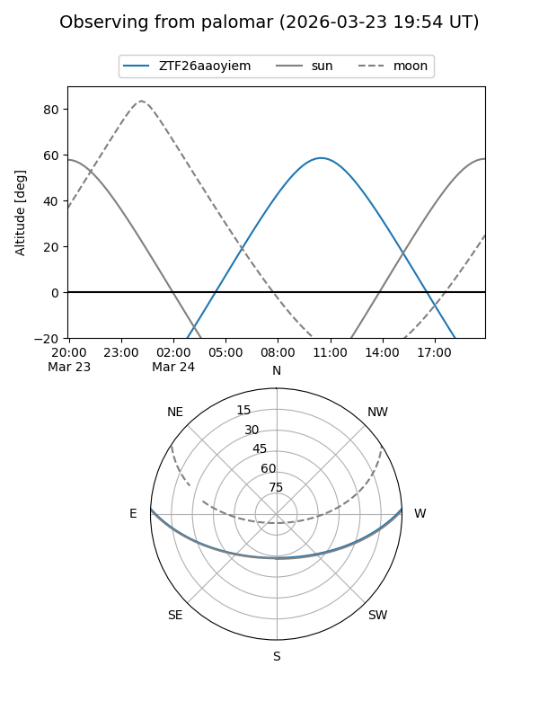

ZTF26aaoyiem
Target ZTF26aaoyiem at 2026-03-23 12:24
Aliases and brokers:
FINK: link
Lasair: link
ALeRCE: link
alt names
ZTF26aaoyiem (ztf,fink_ztf)
Coordinates:
equatorial (ra, dec) = 221.9446,+2.13861
equatorial (HMS+DMS) = 14:47:46.72,+02:08:18.99
galactic (l, b) = (356.0118,+52.58288)
Flags:
Photometry:
last ztfg=19.39
1 ztfg detections
Lightcurve

Visibility


Additional plots